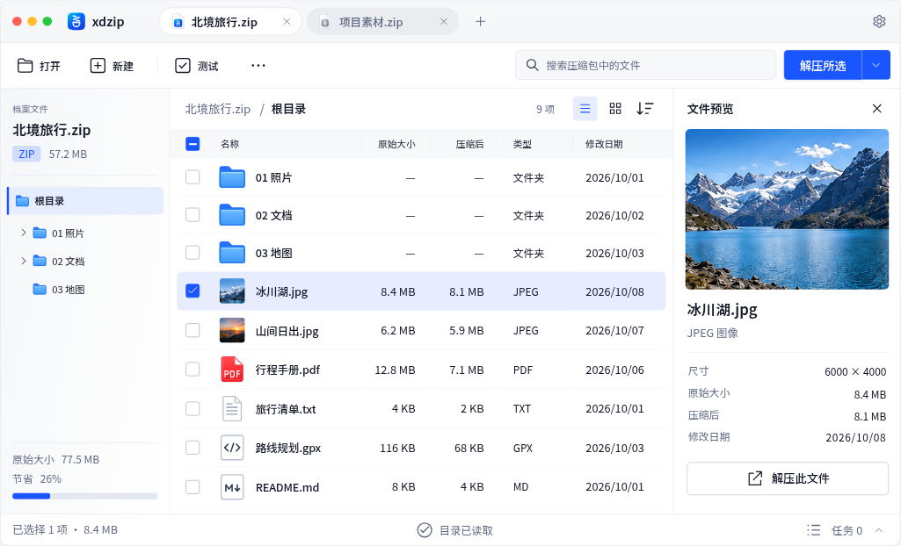
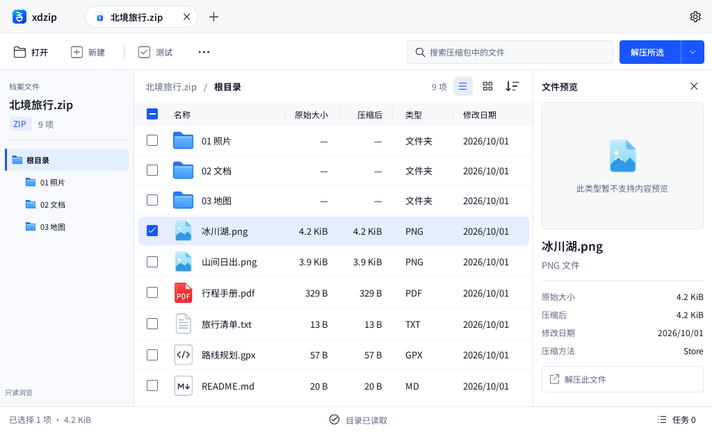
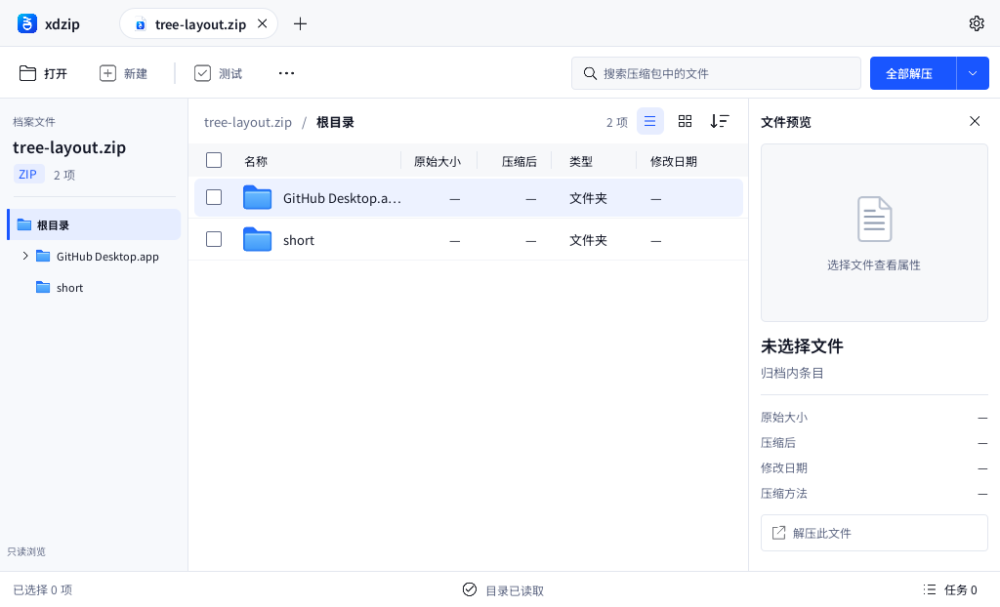
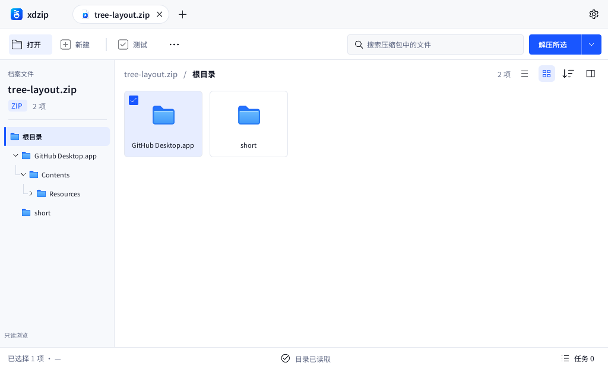
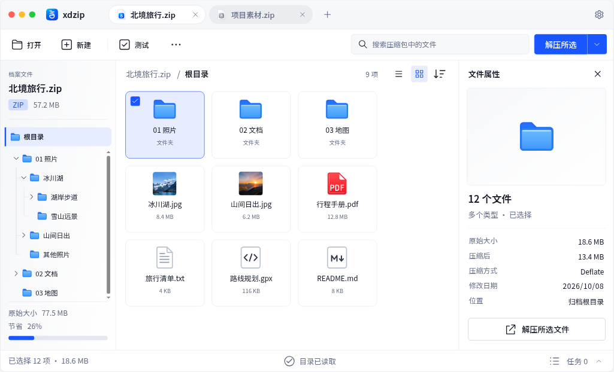
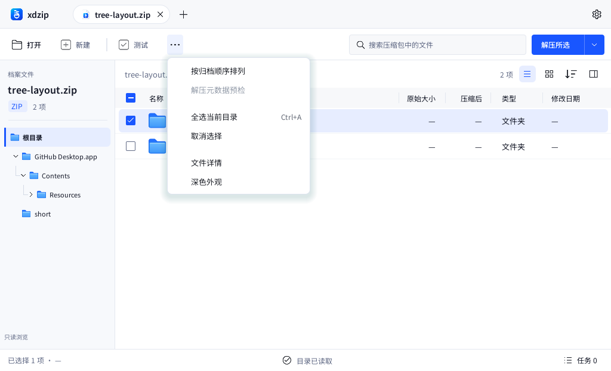
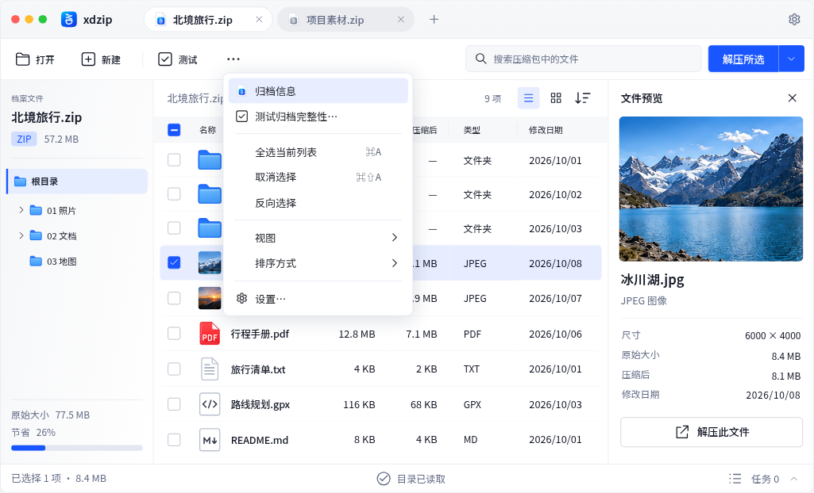

xdzip — 根目录与文件项交互复核
同一 1024 逻辑宽度。Qt 为 Linux 离屏实际界面；HTML 使用演示照片和属性。Qt 尚未解码照片，两组数据、格式、系统装饰不相同。点击图片可查看原始采样尺寸。
验收说明，HTML 594 项检查，Qt 729 项检查，采集来源
HTML 主界面：根目录直属项、档案标题、固定视图按钮
Qt 实际主界面：保留真实 ZIP 元数据及暂不支持内容预览的说明
Qt 整行悬停：五列同步填充；隐式目录使用导航身份
Qt 网格：16 左边距、选中常驻复选框、方形预览开关
HTML 网格：选中后鼠标移出，复选框保持显示
Qt 更多菜单：按钮下方 4 间距、四周柔和阴影
HTML 更多菜单：共享菜单参数与主题